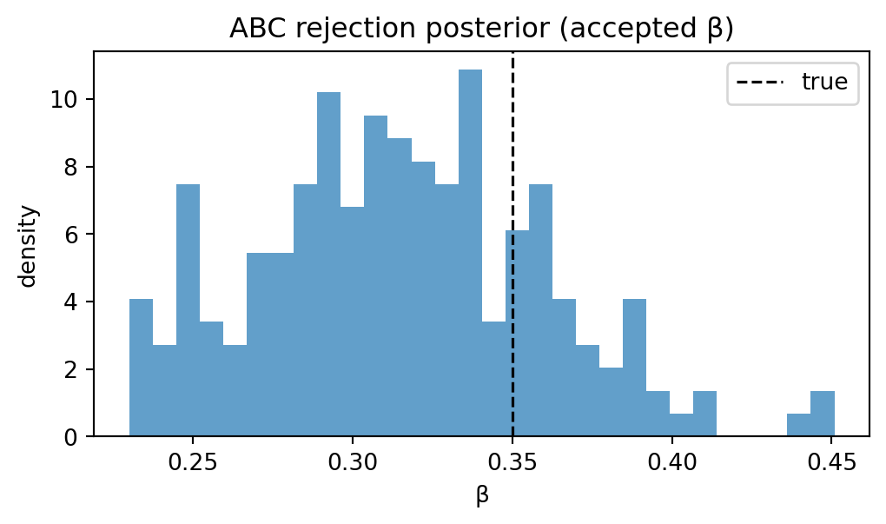
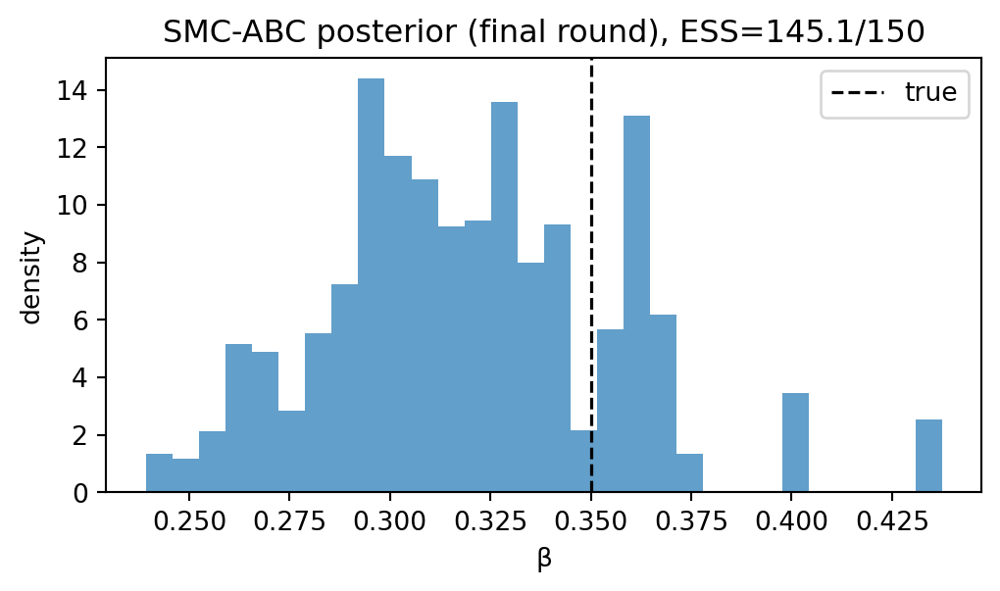
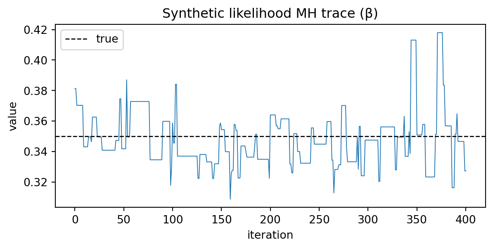
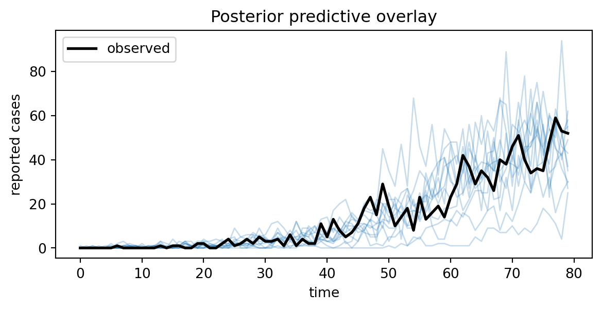

import numpy as np
from diff_epi_inference import SEIRParams
from diff_epi_inference.abc import abc_rejection
from diff_epi_inference.pipeline import simulate_seir_and_report_stochastic
rng = np.random.default_rng(0)
# --- "Observed" data (synthetic) ---
beta_true = 0.35
params_true = SEIRParams(beta=beta_true, sigma=1 / 4.0, gamma=1 / 6.0)
steps = 80
ds_obs = simulate_seir_and_report_stochastic(
params=params_true,
s0=10_000,
e0=3,
i0=2,
r0=0,
dt=1.0,
steps=steps,
reporting_rate=0.25,
rng=rng,
)
y_obs = ds_obs.y.astype(float)9 Likelihood-free baselines
This chapter introduces likelihood-free baselines for the running example. These methods are useful when the simulator is non-differentiable and/or when a tractable likelihood is unavailable.
We focus on three families that define the classical foundation for simulation-based inference: ABC rejection (Beaumont, Zhang, and Balding 2002), SMC-ABC, and synthetic likelihood (Wood 2010).
9.1 Chapter map
- Build low-dimensional summaries and a scaled distance.
- Run ABC rejection for a first posterior approximation.
- Tighten with SMC-ABC.
- Bridge to synthetic likelihood on the same summary space.
9.1.0.1 Demo: beta-only ABC on the stochastic simulator
Below we infer only \(\beta\) (holding the other SEIR parameters fixed) using the stochastic simulator and a very small set of summary statistics. This is intentionally minimal: the goal is to show the ABC control flow and get a rough posterior-like set of accepted \(\beta\) values.
# --- Prior and simulator ---
# We sample log(beta) ~ Normal, then exponentiate.
logbeta_prior_mean = float(np.log(0.3))
logbeta_prior_sd = 0.35
def prior_sample(rng: np.random.Generator) -> np.ndarray:
logbeta = rng.normal(loc=logbeta_prior_mean, scale=logbeta_prior_sd)
return np.array([logbeta], dtype=float)
def simulate(theta: np.ndarray, rng: np.random.Generator) -> np.ndarray:
(logbeta,) = np.asarray(theta, dtype=float)
beta = float(np.exp(logbeta))
params = SEIRParams(beta=beta, sigma=params_true.sigma, gamma=params_true.gamma)
ds = simulate_seir_and_report_stochastic(
params=params,
s0=10_000,
e0=3,
i0=2,
r0=0,
dt=1.0,
steps=steps,
reporting_rate=0.25,
rng=rng,
)
return ds.y.astype(float)
# --- Summaries and distance ---
# Keep summaries low-dimensional: (total cases, peak size, peak time).
def summary(y: np.ndarray) -> np.ndarray:
y = np.asarray(y, dtype=float)
peak_t = int(np.argmax(y))
return np.array([np.sum(y), np.max(y), peak_t], dtype=float)
def distance(s_sim: np.ndarray, s_obs: np.ndarray) -> float:
s_sim = np.asarray(s_sim, dtype=float)
s_obs = np.asarray(s_obs, dtype=float)
# Rough scaling so "time" doesn't dominate.
scale = np.array([1000.0, 50.0, 5.0])
return float(np.linalg.norm((s_sim - s_obs) / scale))res = abc_rejection(
prior_sample=prior_sample,
simulate=simulate,
distance=distance,
y_obs=y_obs,
summary=summary,
epsilon=1.5,
n_accept=200,
max_trials=50_000,
rng=rng,
)
beta_accept = np.exp(res.thetas[:, 0])
print(f"ABC trials: {res.n_trials} (accept rate ~ {len(beta_accept)/res.n_trials:.3f})")
print(f"beta_true: {beta_true:.3f}")
print(
"accepted beta: "
f"mean={np.mean(beta_accept):.3f}, sd={np.std(beta_accept):.3f}, "
f"q10={np.quantile(beta_accept, 0.1):.3f}, q90={np.quantile(beta_accept, 0.9):.3f}"
)ABC trials: 497 (accept rate ~ 0.402)
beta_true: 0.350
accepted beta: mean=0.315, sd=0.044, q10=0.252, q90=0.370from diff_epi_inference.plotting import plot_hist_1d
fig, ax = plot_hist_1d(
beta_accept,
true_value=beta_true,
bins=30,
title="ABC rejection posterior (accepted β)",
xlabel="β",
)
fig

Notes:
- The choice of summaries and scaling in the distance is ad hoc; later sections will discuss more principled summary selection.
- As written, ABC rejection can be inefficient: if the tolerance
epsilonis too small, you may need a very largemax_trials.
9.1.1 3) (Optional) SMC-ABC
- Sequence of tolerances \(\varepsilon_1 > \varepsilon_2 > \cdots\).
- Reweight/resample/perturb particles.
- Monitor acceptance rates and particle degeneracy.
9.1.1.1 Demo: beta-only SMC-ABC on the same summaries
This is the same toy inference problem as the ABC rejection demo above, but using an SMC-ABC scheme: we run multiple rounds with decreasing tolerances, and maintain a weighted particle population.
import numpy as np
from diff_epi_inference.abc import smc_abc
# Reuse: y_obs, params_true, steps, logbeta_prior_mean, logbeta_prior_sd,
# prior_sample, simulate, summary, distance (defined in the ABC rejection block).
def prior_logpdf(theta: np.ndarray) -> float:
(logbeta,) = np.asarray(theta, dtype=float)
z = (logbeta - logbeta_prior_mean) / logbeta_prior_sd
return float(-0.5 * z**2) # (drop constants)
kernel_sd = 0.12
def perturb(theta_prev: np.ndarray, rng: np.random.Generator) -> np.ndarray:
theta_prev = np.asarray(theta_prev, dtype=float)
return theta_prev + rng.normal(loc=0.0, scale=kernel_sd, size=theta_prev.shape)
def perturb_logpdf(theta_prop: np.ndarray, theta_prev: np.ndarray) -> float:
theta_prop = np.asarray(theta_prop, dtype=float)
theta_prev = np.asarray(theta_prev, dtype=float)
z = (theta_prop - theta_prev) / kernel_sd
return float(-0.5 * np.sum(z**2)) # (drop constants)
rng = np.random.default_rng(2)
res_smc = smc_abc(
prior_sample=prior_sample,
prior_logpdf=prior_logpdf,
simulate=simulate,
distance=distance,
y_obs=y_obs,
summary=summary,
epsilons=np.array([2.0, 1.6, 1.3], dtype=float),
n_particles=150,
max_trials_per_round=80_000,
perturb=perturb,
perturb_logpdf=perturb_logpdf,
rng=rng,
)
# Report the final-round beta posterior summary (weighted particles).
logbeta_final = res_smc.thetas[-1, :, 0]
w_final = res_smc.weights[-1]
beta_final = np.exp(logbeta_final)
def ess(w: np.ndarray) -> float:
w = np.asarray(w, dtype=float)
return float(1.0 / np.sum(w**2))
def weighted_quantile(x: np.ndarray, w: np.ndarray, q: float) -> float:
x = np.asarray(x, dtype=float)
w = np.asarray(w, dtype=float)
idx = np.argsort(x)
x = x[idx]
w = w[idx]
cdf = np.cumsum(w) / np.sum(w)
return float(x[np.searchsorted(cdf, q, side="left")])
print(f"eps schedule: {res_smc.epsilons}")
print(f"beta_true: {beta_true:.3f}")
print(f"final-round ESS: {ess(w_final):.1f} / {len(w_final)}")
print(
"SMC-ABC beta (final round): "
f"mean={np.sum(w_final * beta_final):.3f}, "
f"q10={weighted_quantile(beta_final, w_final, 0.1):.3f}, "
f"q90={weighted_quantile(beta_final, w_final, 0.9):.3f}"
)eps schedule: [2. 1.6 1.3]
beta_true: 0.350
final-round ESS: 145.1 / 150
SMC-ABC beta (final round): mean=0.320, q10=0.273, q90=0.364from diff_epi_inference.plotting import plot_hist_1d
fig, ax = plot_hist_1d(
beta_final,
weights=w_final,
true_value=beta_true,
bins=30,
title=f"SMC-ABC posterior (final round), ESS={ess(w_final):.1f}/{len(w_final)}",
xlabel="β",
)
fig

Notes:
- The perturbation kernel above is a simple Gaussian random walk on \(\log \beta\); in practice, you would adapt its scale using the weighted particle covariance.
- The tolerance schedule is hand-picked for this toy example. A common approach is to set each \(\varepsilon_t\) to a quantile of the previous round’s accepted distances.
9.1.2 4) Synthetic likelihood (on summaries)
- Assume \(s(y) \mid \theta \approx \mathcal{N}(\mu_\theta, \Sigma_\theta)\).
- Estimate \((\mu_\theta, \Sigma_\theta)\) via repeated simulations at fixed \(\theta\).
- Use the resulting approximate likelihood inside MH/HMC.
9.1.2.1 Demo: beta-only synthetic likelihood on the same summaries
This is a tiny “likelihood-on-summaries” baseline:
- For a proposed \(\theta\) (here \(\theta = \log \beta\)), run the stochastic simulator multiple times.
- Compute the same summary vector \(s(y)\) used in the ABC demo.
- Fit a Gaussian \(\mathcal{N}(\mu_\theta, \Sigma_\theta)\) to the simulated summaries.
- Use the resulting synthetic likelihood \(p(s(y_{\mathrm{obs}}) \mid \theta)\) inside random-walk MH.
import numpy as np
from diff_epi_inference import SEIRParams
from diff_epi_inference.mcmc.mh import random_walk_metropolis_hastings
from diff_epi_inference.pipeline import simulate_seir_and_report_stochastic
from diff_epi_inference.synthetic_likelihood import estimate_summary_gaussian, mvn_logpdf
# Reuse the observed data / params from the ABC block above.
# (Quarto executes code blocks in order, so y_obs and params_true exist here.)
s_obs = summary(y_obs)
def simulate_summary_once(logbeta: float, *, rng: np.random.Generator) -> np.ndarray:
beta = float(np.exp(logbeta))
params = SEIRParams(beta=beta, sigma=params_true.sigma, gamma=params_true.gamma)
ds = simulate_seir_and_report_stochastic(
params=params,
s0=10_000,
e0=3,
i0=2,
r0=0,
dt=1.0,
steps=steps,
reporting_rate=0.25,
rng=rng,
)
return summary(ds.y.astype(float))
def estimate_mu_cov(
logbeta: float,
*,
rng: np.random.Generator,
n_sims: int = 12,
cov_jitter: float = 1e-6,
) -> tuple[np.ndarray, np.ndarray]:
"""Estimate (mu, cov) of summaries s(y) at fixed logbeta via repeated sims."""
return estimate_summary_gaussian(
lambda r: simulate_summary_once(logbeta, rng=r),
n_sims=n_sims,
rng=rng,
cov_jitter=cov_jitter,
)
rng = np.random.default_rng(1)
def log_prior(theta: np.ndarray) -> float:
(logbeta,) = np.asarray(theta, dtype=float)
z = (logbeta - logbeta_prior_mean) / logbeta_prior_sd
return float(-0.5 * z**2) # (drop constants)
def log_synth_lik(theta: np.ndarray, rng: np.random.Generator) -> float:
(logbeta,) = np.asarray(theta, dtype=float)
mu, cov = estimate_mu_cov(float(logbeta), rng=rng)
return mvn_logpdf(s_obs, mu, cov)
def log_posterior(theta: np.ndarray, rng: np.random.Generator) -> float:
lp = log_prior(theta)
if not np.isfinite(lp):
return -np.inf
ll = log_synth_lik(theta, rng)
return lp + ll
# A very small chain for demonstration (synthetic likelihood is expensive per step).
chain = random_walk_metropolis_hastings(
log_prob_fn=lambda theta: log_posterior(theta, rng),
x0=np.array([logbeta_prior_mean], dtype=float),
n_steps=500,
proposal_std=np.array([0.15], dtype=float),
rng=rng,
)
beta_chain = np.exp(chain.chain[100:, 0])
accept_rate = float(np.mean(chain.accepted))
print(f"MH accept rate: {accept_rate:.3f}")
print(
"synthetic-lik beta: "
f"mean={np.mean(beta_chain):.3f}, sd={np.std(beta_chain):.3f}, "
f"q10={np.quantile(beta_chain, 0.1):.3f}, q90={np.quantile(beta_chain, 0.9):.3f}"
)MH accept rate: 0.222
synthetic-lik beta: mean=0.348, sd=0.019, q10=0.328, q90=0.373from diff_epi_inference.plotting import plot_trace
fig, ax = plot_trace(
beta_chain,
true_value=beta_true,
title="Synthetic likelihood MH trace (β)",
)
fig

rng_ppc = np.random.default_rng(123)
# Draw a few posterior samples of logbeta (post burn-in) for posterior predictive checks.
post_logbeta = chain.chain[100:, 0]
idx = rng_ppc.choice(post_logbeta.size, size=12, replace=False)
logbeta_draws = post_logbeta[idx]
# Simulate trajectories and overlay them.
draws = []
for logb in logbeta_draws:
params = SEIRParams(beta=float(np.exp(logb)), sigma=params_true.sigma, gamma=params_true.gamma)
ds = simulate_seir_and_report_stochastic(
params=params,
s0=10_000,
e0=3,
i0=2,
r0=0,
dt=1.0,
steps=steps,
reporting_rate=0.25,
rng=rng_ppc,
)
draws.append(ds.y.astype(float))
from diff_epi_inference.plotting import plot_ppc_overlay
fig, ax = plot_ppc_overlay(
t=np.arange(steps, dtype=float),
observed=y_obs,
draws=np.asarray(draws),
title="Posterior predictive overlay",
)
fig

Notes:
- This is conceptually simple but computationally heavy: each MH step requires multiple simulator runs.
- In practice you would typically (i) use common random numbers, (ii) reuse simulations across nearby \(\theta\), or (iii) move to more modern amortised SBI methods.
9.2 Notes
- These baselines are intentionally simple and prioritise clarity over efficiency.
- Summary choice and calibration should always be revisited when moving to higher-dimensional settings.
Beaumont, Mark A, Wenyang Zhang, and David J Balding. 2002. “Approximate Bayesian Computation in Population Genetics.” Genetics 162 (4): 2025–35.
Wood, Simon N. 2010. “Statistical Inference for Noisy Nonlinear Ecological Dynamic Systems.” Nature 466 (7310): 1102–4.